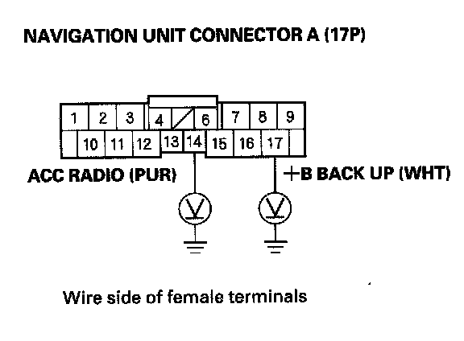
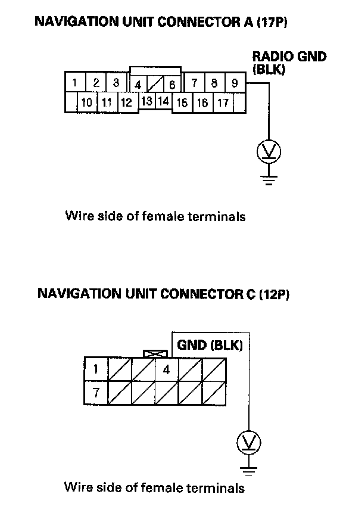

No picture is displayed
No picture is displayedNOTE: Always check the connectors for poor connections or loose terminals between the audio unit, CD changer, Navigation unit, and XM receiver.
1. Check the No. 23 (10 A) fuse in the under-hood fuse/relay box and No. 35 (7.5 A) fuse in the under-dash fuse/relay box, and reinstall the fuse if it is OK"
Is the fuse OK?
YES - Go to step 2.
NO - Replace the fuse and recheck.
2. Turn the ignition switch to ACC (I).
3. Operate the radio and listen to the audio.
Can you hear the audio?
YES - Go to step 4.
NO - Refer to audio system troubleshooting.
4. Turn the ignition switch ON (II).

5. Measure the voltage between navigation unit connector A (17P)terminals No. 14 and body ground, and between terminal No. 17 and body ground.
Is there battery voltage on both terminals?
YES - Go to step 6.
NO - Repair open in the wire between the under-dash fuse/relay box and the navigation unit.

6. Measure the voltage between the navigation unit connector A (17P) terminal No.9 and body ground, and between navigation unit connector C(12P) terminal No.4 and body ground.
Is there less than 0.1 V?
YES - Replace the navigation unit.
NO - Repair open in the wire between the navigation unit and body ground (G504), (G505).